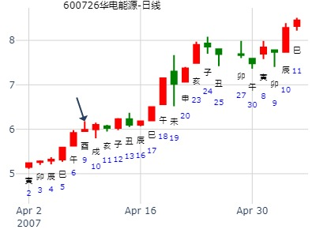
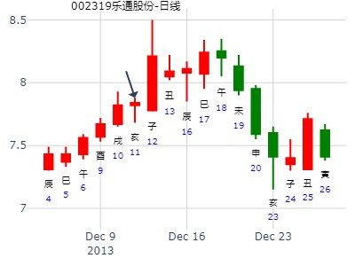
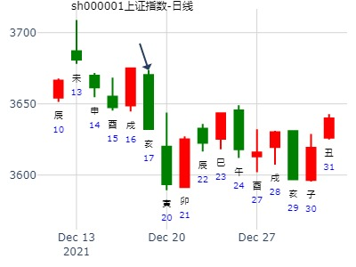

主帖标题: 元月11-15大盘涨跌卦
时间: 2010-01-08
干支: 己丑年丁丑月戊午日 (旬空: 子丑 )
井静卦
朱雀 ▅▅ ▅▅ 父母子水
青龙 ▅▅▅▅▅ 妻财戌土 世
玄武 ▅▅ ▅▅ 官鬼申金
白虎 ▅▅▅▅▅ 官鬼酉金
腾蛇 ▅▅▅▅▅ 父母亥水 应
勾陈 ▅▅ ▅▅ 妻财丑土
春节前2周上证走势如何？
公历起卦时间：2016年1月22日17时38分 (在线摇卦)
干支：乙未年 己丑月 癸卯日 辛酉时 （日空：辰巳）
震宫：水风井
六神 伏神 本卦
白虎 父母戊子水 ▅▅ ▅▅
腾蛇 妻财戊戌土 ▅▅▅▅▅ 世
勾陈 子孙庚午火 官鬼戊申金 ▅▅ ▅▅
朱雀 官鬼辛酉金 ▅▅▅▅▅
青龙 兄弟庚寅木 父母辛亥水 ▅▅▅▅▅ 应
玄武 妻财辛丑土 ▅▅ ▅▅
---
未日冲丑，没冲暗动，反而冲破，大跌
申酉跌泄财
戌日大涨。
主帖标题: 转发2015年上海股市年卦收集
性别：男 占事：乙未年上证指数走势
公历起卦时间：2015年2月4日13时47分 (在线摇卦)
干支：乙未年 戊寅月 辛亥日 乙未时 （日空：寅卯）
神煞：驿马－巳 桃花－子 日禄－酉 贵人－寅，午
震宫：水风井
六神 伏神 本 卦
腾蛇 父母戊子水 ▅▅ ▅▅
勾陈 妻财戊戌土 ▅▅▅▅▅ 世
朱雀 子孙庚午火 官鬼戊申金 ▅▅ ▅▅
青龙 官鬼辛酉金 ▅▅▅▅▅
玄武 兄弟庚寅木 父母辛亥水 ▅▅▅▅▅ 应
白虎 妻财辛丑土 ▅▅ ▅▅
主帖标题: 大家一起来：试测上证2.18-2.28何日涨幅最大？
试测上证2.18-2.28何日涨幅最大？
排卦：元亨利贞网六爻在线排盘系统 http://www.china95.net
公历起卦时间：2020年2月24日20时49分 (电脑自动)
干支：庚子年 戊寅月 丁酉日 庚戌时 （日空：辰巳）
神煞：驿马－亥 桃花－午 日禄－午 贵人－酉，亥
震宫：水风井 震宫：水风井
六神 伏神 本 卦 变 卦
青龙 父母戊子水 ▅▅ ▅▅ 父母戊子水 ▅▅ ▅▅
玄武 妻财戊戌土 ▅▅▅▅▅ 世 妻财戊戌土 ▅▅▅▅▅ 世
白虎 子孙庚午火 官鬼戊申金 ▅▅ ▅▅ 官鬼戊申金 ▅▅ ▅▅
螣蛇 官鬼辛酉金 ▅▅▅▅▅ 官鬼辛酉金 ▅▅▅▅▅
勾陈 兄弟庚寅木 父母辛亥水 ▅▅▅▅▅ 应 父母辛亥水 ▅▅▅▅▅ 应
朱雀 妻财辛丑土 ▅▅ ▅▅ 妻财辛丑土 ▅▅ ▅▅
___
男 占事： 3.25上证收盘走势？
公历起卦时间：2021年3月25日8时8分 (电脑自动)
干支：辛丑年 辛卯月 壬申日 甲辰时 （日空：戌亥）
神煞：驿马－寅 桃花－酉 日禄－亥 贵人－卯，巳
震宫：水风井
六神 伏神 本 卦
白虎 父母戊子水 ▅▅ ▅▅
螣蛇 妻财戊戌土 ▅▅▅▅▅ 世
勾陈 子孙庚午火 官鬼戊申金 ▅▅ ▅▅
朱雀 官鬼辛酉金 ▅▅▅▅▅
青龙 兄弟庚寅木 父母辛亥水 ▅▅▅▅▅ 应
玄武 妻财辛丑土 ▅▅ ▅▅
主题：华电能源[600726]下周涨跌走向？
丁亥 甲辰 壬申 丙午 (戌亥空)
丁亥年二月廿一(2007/04/08 12:06:15)
水风井
白虎 父母子水 ∥
腾蛇 妻财戌土 ／ 世子孙午火：
勾陈 官鬼申金 ∥
朱雀 官鬼酉金 ／ 兄弟寅木：
青龙 父母亥水 ／ 应
玄武 妻财丑土 ∥

600635最近二周走势？ 招财公主：211212
公历起卦时间：2015年4月27日11时16分 (铜钱卦）
干支：乙未年 庚辰月 癸酉日 戊午时 （日空：戌亥）
震宫：水风井
六神 伏神 本 卦
白虎 父母戊子水 ▅▅ ▅▅
腾蛇 妻财戊戌土 ▅▅▅▅▅ 世
勾陈 子孙庚午火 官鬼戊申金 ▅▅ ▅▅
朱雀 官鬼辛酉金 ▅▅▅▅▅
青龙 兄弟庚寅木 父母辛亥水 ▅▅▅▅▅ 应
玄武 妻财辛丑土 ▅▅ ▅▅
主要矛盾为世应戌亥空，在辰冲戌实为涨，巳冲亥实为跌（或许双重作用加上兄弟冲飞露
伏）
戌日冲高5%回落。预计亥子日跌。丑日反弹。（实际亥日低开大涨）
巳冲亥实，冲高又跌。
未日冲丑爻，不算暗动，却按跌了。
占事：南都电源5月走势？
公历起卦时间：2015年4月30日11时35分 (在线摇卦)
干支：乙未年 庚辰月 丙子日 甲午时 （日空：申酉）
震宫：水风井 震宫：水风井
六神 伏神 本 卦 变 卦
青龙 父母戊子水 ▅▅ ▅▅ 父母戊子水 ▅▅ ▅▅
玄武 妻财戊戌土 ▅▅▅▅▅ 世 妻财戊戌土 ▅▅▅▅▅ 世
白虎 子孙庚午火 官鬼戊申金 ▅▅ ▅▅ 官鬼戊申金 ▅▅ ▅▅
腾蛇 官鬼辛酉金 ▅▅▅▅▅ 官鬼辛酉金 ▅▅▅▅▅
勾陈 兄弟庚寅木 父母辛亥水 ▅▅▅▅▅ 应 父母辛亥水 ▅▅▅▅▅ 应
朱雀 妻财辛丑土 ▅▅ ▅▅ 妻财辛丑土 ▅▅ ▅▅
实际5月停牌。6月放出来连板到15日 见顶。午月戌日戌财见顶。
占事：上证516-520走势
2016-05-16
再人
干支：丙申年 癸巳月 戊戌日 丙辰时
旬空：辰巳 午未 辰巳 子丑
井静卦
六神 伏神 本 卦
朱雀 ▅▅ ▅▅ 父母子水
青龙 ▅▅▅▅▅ 妻财戌土 世
玄武 子孙午火▅▅ ▅▅ 官鬼申金
白虎 ▅▅▅▅▅ 官鬼酉金
腾蛇 兄弟寅木▅▅▅▅▅ 父母亥水 应
勾陈 ▅▅ ▅▅ 妻财丑土
占事: 下周沪市运行！
公历时间：2021年5月9日12时5分
干 支：辛丑年 癸巳月 丁巳日 丙午时
旬 空：辰巳 午未 子丑 寅卯
神 煞：驿马─亥 桃花─午 日禄─午 贵人─酉，亥
震宫：水风井
六神 伏 神 【本 卦】
青龙 ▄▄ ▄▄ 父母戊子水
玄武 ▄▄▄▄▄ 妻财戊戌土 世
白虎 子孙庚午火 ▄▄ ▄▄ 官鬼戊申金
螣蛇 ▄▄▄▄▄ 官鬼辛酉金
勾陈 兄弟庚寅木 ▄▄▄▄▄ 父母辛亥水 应
朱雀 ▄▄ ▄▄ 妻财辛丑土

占事：603718海利生物今天涨跌
公历起卦时间：2015年6月17日8时37分 (电脑自动)
干支：乙未年 壬午月 甲子日 戊辰时 （日空：戌亥）
神煞：驿马－寅 桃花－酉 日禄－寅 贵人－丑，未
震宫：水风井
六神 伏神 本 卦
玄武 父母戊子水 ▅▅ ▅▅
白虎 妻财戊戌土 ▅▅▅▅▅ 世
腾蛇 子孙庚午火 官鬼戊申金 ▅▅ ▅▅
勾陈 官鬼辛酉金 ▅▅▅▅▅
朱雀 兄弟庚寅木 父母辛亥水 ▅▅▅▅▅ 应
青龙 妻财辛丑土 ▅▅ ▅▅
世爻旬空，子孙暗动也不生财
上证指数8月4 -8日行情预测？[六爻预测][原创]
起卦时间：2014年08月03日16时11分起卦方式：手摇硬币起卦
立秋：2014年08月07日23时02分
干支：甲午年 辛未月 丙午日 丙申时
旬空：辰巳 戌亥 寅卯 辰巳
六神 伏神 震宫：水风井
【本 卦】
青龙 ▅▅ ▅▅ 父母戊子水
玄武 ▅▅▅▅▅ 妻财戊戌土 世
白虎 子孙庚午火 ▅▅ ▅▅ 官鬼戊申金
滕蛇 ▅▅▅▅▅ 官鬼辛酉金
勾陈 兄弟庚寅木 ▅▅▅▅▅ 父母辛亥水 应
朱雀 ▅▅ ▅▅ 妻财辛丑土
丑未戌三刑。
主帖标题: 心动测上证卦
占事:上证3458是不是今年的
起卦方式：电脑自动
公历时间：2020年8月1日16时9分
干 支：庚子年 癸亥月 丙子日 丙申时
旬 空：辰巳 子丑 申酉 辰巳
神 煞：驿马─寅 桃花─酉 日禄─巳 贵人─酉，亥
震宫：水风井
六神 伏 神 【本 卦】
青龙 ▄▄ ▄▄ 父母戊子水
玄武 ▄▄▄▄▄ 妻财戊戌土 世
白虎 子孙庚午火 ▄▄ ▄▄ 官鬼戊申金
螣蛇 ▄▄▄▄▄ 官鬼辛酉金
勾陈 兄弟庚寅木 ▄▄▄▄▄ 父母辛亥水 应
朱雀 ▄▄ ▄▄ 妻财辛丑土
井静卦_601990
占事: 南京证券到8.19日
时间: 2022-8-7
干支: 壬寅年戊申月壬辰日辛亥时 (旬空: 午未 )
井静卦
六神 伏神 本 卦
白虎 ▅▅ ▅▅ 父母子水
腾蛇 ▅▅▅▅▅ 妻财戌土 世
勾陈 子孙午火▅▅ ▅▅ 官鬼申金
朱雀 ▅▅▅▅▅ 官鬼酉金
青龙 兄弟寅木▅▅▅▅▅ 父母亥水 应
玄武 ▅▅ ▅▅ 妻财丑土
井静卦_603701
占事: 德宏股份到九月底金玉堂
时间: 2022-08-19
干支: 壬寅年戊申月甲辰日庚午时 (旬空: 寅卯 )
井静卦
六神 伏神 本 卦
玄武 ▅▅ ▅▅ 父母子水
白虎 ▅▅▅▅▅ 妻财戌土 世
腾蛇 子孙午火▅▅ ▅▅ 官鬼申金
勾陈 ▅▅▅▅▅ 官鬼酉金
朱雀 兄弟寅木▅▅▅▅▅ 父母亥水 应
青龙 ▅▅ ▅▅ 妻财丑土
井静卦。德宏股份819-930. 金玉堂。
长线看妻财持世。
短线3天后申酉日见顶。大跌5天又见底。爻卦的申月正好是长上影线。


参考：颐之益，德宏股份3个月。妻财持世戌土。父化子。.note
占事：一周大盘
第04期季军庄宇易友卦例：
起卦方式：铜钱摇卦
起卦公历：2010年9月26日15时50分(北京时间)。
干支： 庚寅年 乙酉月 己卯日 壬申时
主变卦 水风井(震宫) 之 水风井(震宫) [空亡:申、酉]
勾陈 ━ ━ 父母子水
朱雀 ━━━ 妻财戌土 世
青龙 子孙午火 ━ ━ 官鬼申金
玄武 ━━━ 官鬼酉金
白虎 兄弟寅木 ━━━ 父母亥水 应
螣蛇 ━ ━ 妻财丑土
占事：9月大盘何时见底
时间: 2022-09-23
干支: 壬寅年己酉月己卯日己巳时 (旬空: 申酉 )
井静卦
六神 伏神 本 卦
勾陈 ▅▅ ▅▅ 父母子水
朱雀 ▅▅▅▅▅ 妻财戌土 世
青龙 子孙午火▅▅ ▅▅ 官鬼申金
玄武 ▅▅▅▅▅ 官鬼酉金
白虎 兄弟寅木▅▅▅▅▅ 父母亥水 应
腾蛇 ▅▅ ▅▅ 妻财丑土
[[无妄之噬嗑_sh000001_2022-09-24_9月大盘何时见底]]
占事：9月大盘何时见底
无妄之噬嗑__2022-09-24
时间: 2022-09-24
干支: 壬寅年己酉月庚辰日 (旬空: 申酉 )
天雷无妄 火雷噬嗑
六神 伏神 本 卦 变 卦
腾蛇 ▅▅▅▅▅ 妻财戌土 ▅▅▅▅▅ 子孙巳火
勾陈 ▅▅▅▅▅ 官鬼申金 Ｏ→ ▅▅ ▅▅ 妻财未土 世
朱雀 ▅▅▅▅▅ 子孙午火 世 ▅▅▅▅▅ 官鬼酉金
青龙 ▅▅ ▅▅ 妻财辰土 ▅▅ ▅▅ 妻财辰土
玄武 ▅▅ ▅▅ 兄弟寅木 ▅▅ ▅▅ 兄弟寅木 应
白虎 ▅▅▅▅▅ 父母子水 应 ▅▅▅▅▅ 父母子水

主帖标题: 600611大众交通7.37元下周涨跌
男 占事：600611大众交通7.43元16日涨跌
公历起卦时间：2013年10月15日17时47分 (在线摇卦)
干支：癸巳年 壬戌月 甲寅日 癸酉时 （日空：子丑）
神煞：驿马－申 桃花－卯 日禄－寅 贵人－丑，未
震宫：水风井
六神 伏神 本 卦
玄武 父母戊子水 ▅▅ ▅▅
白虎 妻财戊戌土 ▅▅▅▅▅ 世
腾蛇 子孙庚午火 官鬼戊申金 ▅▅ ▅▅
勾陈 官鬼辛酉金 ▅▅▅▅▅
朱雀 兄弟庚寅木 父母辛亥水 ▅▅▅▅▅ 应
青龙 妻财辛丑土 ▅▅ ▅▅
主帖标题: 发现个牛股
同益股份 300538
起卦公历：2020年11月6日12时11分(北京时间)
起卦农历：二○二○年 九月 廿一日 午时。
干支： 庚子年 丙戌月 癸丑日 戊午时 (卦身：辰)
主变卦 水风井(震宫) [空亡:寅、卯]
白虎 ━ ━ 父母子水
螣蛇 ━━━ 妻财戌土 世
勾陈 ━ ━ 官鬼申金
朱雀 ━━━ 官鬼酉金
青龙 ━━━ 父母亥水 应
玄武 ━ ━ 妻财丑土
占事:沃尔核材一旬走势_2021-11-22
时间: 2021-11-22
干支: 辛丑年己亥月甲戌日 (旬空: 申酉 )
井静卦
六神 伏神 本 卦
玄武 ▅▅ ▅▅ 父母子水
白虎 ▅▅▅▅▅ 妻财戌土 世
腾蛇 子孙午火▅▅ ▅▅ 官鬼申金
勾陈 ▅▅▅▅▅ 官鬼酉金
朱雀 兄弟寅木▅▅▅▅▅ 父母亥水 应
青龙 ▅▅ ▅▅ 妻财丑土
子孙伏于旬空飞神申金下，寅日跌，论冲实飞神。而且兄弟出伏克制妻财。
午日伏神透出涨。巳日冲飞露伏，跌，假阳。申日飞神又压制伏神。
24日子日子孙日破而跌。丑日妻财值班涨。
主帖标题: 自己发不了卦，请大家发卦预测一下！
占事：002319乐通股份12日涨跌
公历起卦时间：2013年12月11日19时22分 (电脑自动)
干支：癸巳年 甲子月 辛亥日 戊戌时 （日空：寅卯）
神煞：驿马－巳 桃花－子 日禄－酉 贵人－寅，午
震宫：水风井
六神 伏神 本 卦
腾蛇 父母戊子水 ▅▅ ▅▅
勾陈 妻财戊戌土 ▅▅▅▅▅ 世
朱雀 子孙庚午火 官鬼戊申金 ▅▅ ▅▅
青龙 官鬼辛酉金 ▅▅▅▅▅
玄武 兄弟庚寅木 父母辛亥水 ▅▅▅▅▅ 应
白虎 妻财辛丑土 ▅▅ ▅▅

占事：600023浙能电力31日涨跌
公历起卦时间：2013年12月30日15时10分 (电脑自动)
干支：癸巳年 甲子月 庚午日 甲申时 （日空：戌亥）
神煞：驿马－申 桃花－卯 日禄－申 贵人－丑，未
震宫：水风井
六神 伏神 本 卦
腾蛇 父母戊子水 ▅▅ ▅▅
勾陈 妻财戊戌土 ▅▅▅▅▅ 世
朱雀 子孙庚午火 官鬼戊申金 ▅▅ ▅▅
青龙 官鬼辛酉金 ▅▅▅▅▅
玄武 兄弟庚寅木 父母辛亥水 ▅▅▅▅▅ 应
白虎 妻财辛丑土 ▅▅ ▅▅
主帖标题: 12月20至12月24日大盘预测
公历时间：2021年12月17日15时16分
干 支：辛丑年 庚子月 己亥日 壬申时
旬 空：辰巳 辰巳 辰巳 戌亥
神 煞：驿马─巳 桃花─子 日禄─午 贵人─子，申
中国预测网纳甲六爻排盘
震宫：水风井
六神 伏 神 【本 卦】
勾陈 ▄▄ ▄▄ 父母戊子水
朱雀 ▄▄▄▄▄ 妻财戊戌土 世
青龙 子孙庚午火 ▄▄ ▄▄ 官鬼戊申金
玄武 ▄▄▄▄▄ 官鬼辛酉金
白虎 兄弟庚寅木 ▄▄▄▄▄ 父母辛亥水 应
螣蛇 ▄▄ ▄▄ 妻财辛丑土
___
